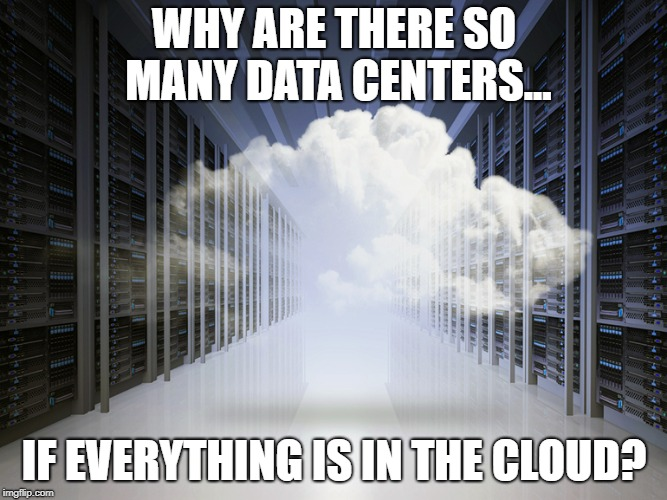
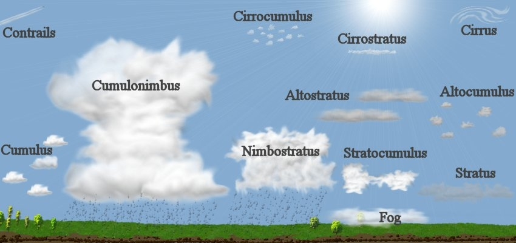
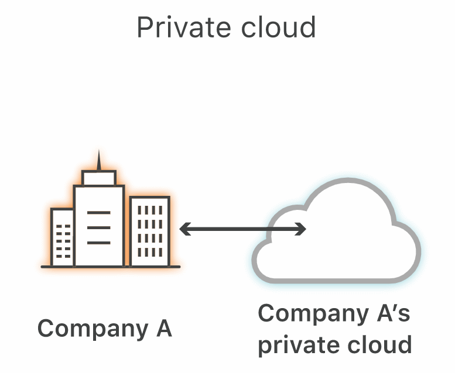
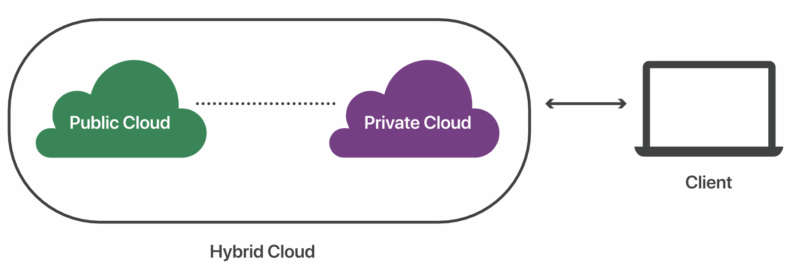
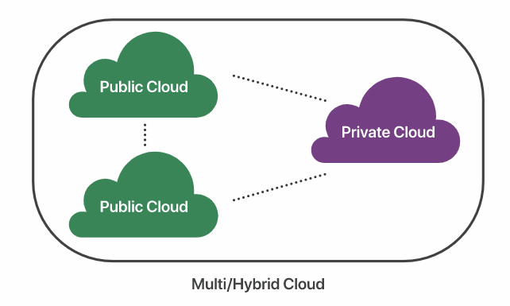
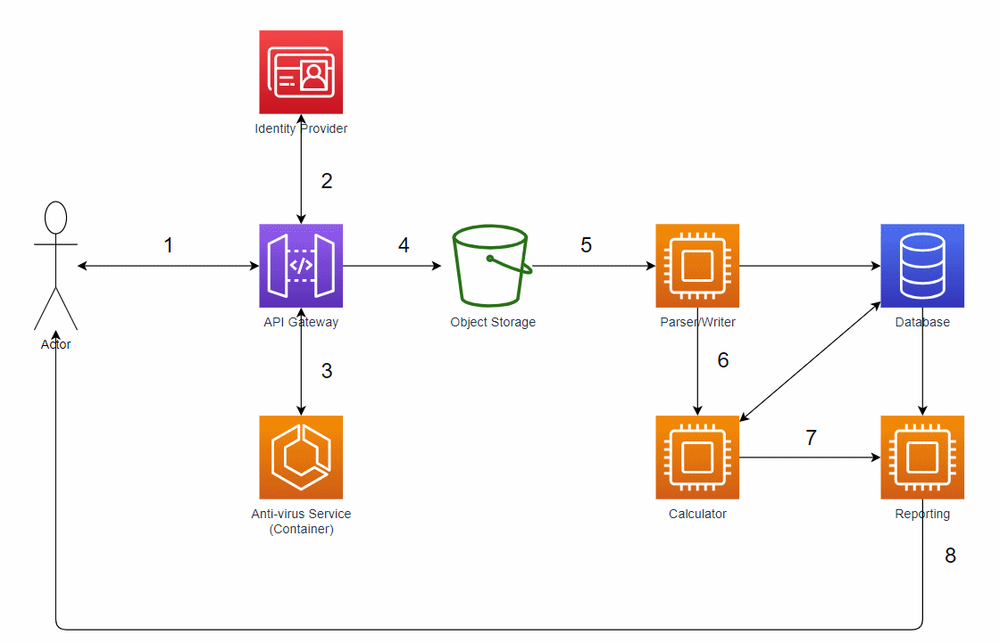

Basics of Cloud Architecture

What is the Cloud?

Types of Clouds

Private Cloud
- Self-hosted or Third-party hosted
- Resources are exclusively for one organisation
- Usually more secure than public cloud, as connections are only allowed from certain sources and resources are not shared
- Virtual Private Cloud

Hybrid Cloud
- Mixture of cloud types
- Example:
- Public Cloud: High volume operations, with lower security requirements
- Private Cloud: Business critical / sensitive operations

Multicloud
- Two or more clouds
- Why?
- Risk mitigation
- Potential cost savings
- Ability to choose "best of breed" solution

Which Type to use?
- Do you even need to use the cloud?
- Depends on:
- Regulatory restrictions/requirements
- Security/Accessibility
- Current state of infrastructure
- Staff knowledge/expertise with cloud
Components of Clouds

Storage
- Block Storage
- Object Storage
- Storage type options (SSD, HDD):
- Speed vs. Price
- Storage location options (Region):
- Regulatory requirements
- Redundancy location options:
- Availability vs. Price
- Regularly check access restrictions
Networking
- API Gateway
- Event/Messaging Bus

Compute
- Self-contained application
- Triggers
- Called
- Event
- Time
- Configuration
- Platform-managed
- Kubernetes
Other Functionality
- Virtual Machines
- Data Warehousing
- Stream data processing
- Machine Learning
Example
Conclusions

Cloud Forum
11 May
References
- https://www.redhat.com/en/topics/cloud-computing/what-is-cloud-architecture/
- https://www.cloudflare.com/learning/cloud/what-is-the-cloud/
- https://www.cloudflare.com/learning/cloud/what-is-a-public-cloud/
- https://www.cloudflare.com/learning/cloud/what-is-hybrid-cloud/
- https://azure.microsoft.com/en-us/overview/what-are-private-public-hybrid-clouds/
- https://cloudacademy.com/blog/object-storage-block-storage/
- https://docs.microsoft.com/en-us/azure/architecture/microservices/design/gateway/
- https://medium.com/statuscode/cloud-functions-vs-container-engine-5c773e364ced/
- https://www.reddit.com/r/ProgrammerHumor/comments/6cer5t/what_are_clouds_made_of/
- https://makeameme.org/meme/there-will-be-5bd8ef
- https://commons.wikimedia.org/wiki/File:Cloud_types.jpg